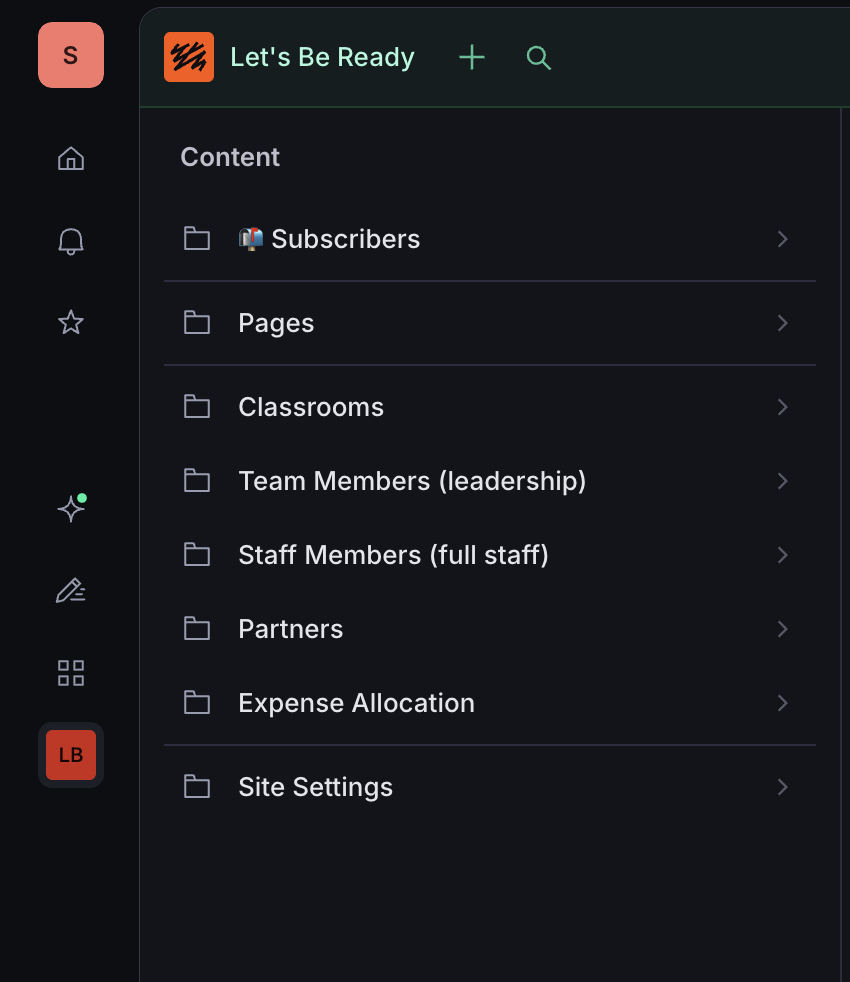
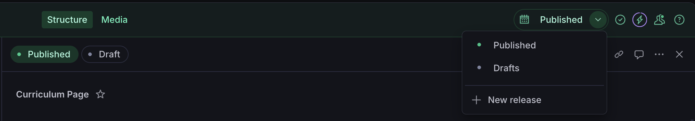
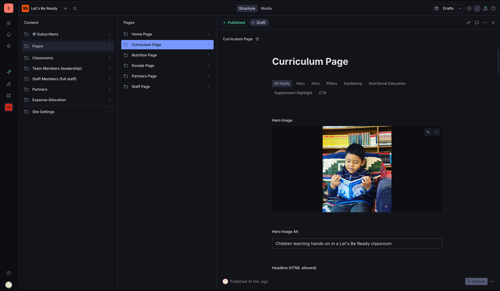
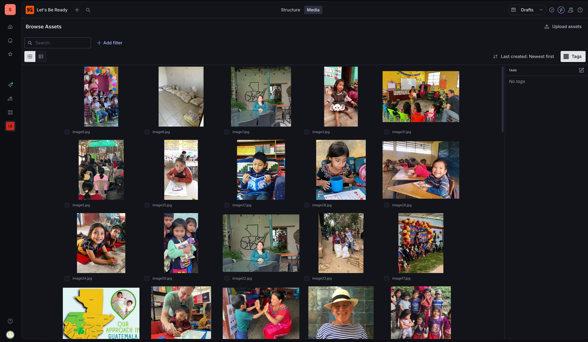

Quick start
You'll work in two places:
- The Studio — letsbeready.sanity.studio — this is where you make changes. Think of it as the back office.
- The Live Site — letsbeready.org — this is what visitors see. Your changes appear here automatically about 30 seconds after you publish them.
You won't ever need to touch code, files, or anything technical. Just click into a field, type, and hit Publish.
Logging in
- Open letsbeready.sanity.studio in your browser (Chrome, Safari, Firefox, Edge — all work).
- You'll be asked to sign in. Use the same email address that was used to invite you (Google sign-in works for Gmail and Google Workspace accounts).
- That's it — you're in. Bookmark the page so you can find it again.
A tour of the studio
When you log in, you'll see a sidebar on the left. Each item is a different kind of content you can edit. Here's what each one does:

- 📬 Subscribers — everyone who signed up for the newsletter. New ones appear at the top automatically.
- Pages — the actual pages on the website. Click this to expand and see Home, Curriculum, Nutrition, Donate, Partners, and Staff.
- Classrooms — every classroom that appears on the homepage map.
- Team Members (leadership) — the leadership team that appears on the homepage.
- Staff Members (full staff) — the broader staff list (teachers, coordinators) that appears on the optional Staff page.
- Partners — the partner organizations on the Partners page.
- Expense Allocation — the percentages that make up the financial pie chart on the homepage.
- Site Settings — global stuff that appears everywhere (logo, contact email, social links, footer text). Set it once, it shows up on every page.
At the very top of the screen, you'll also see a Media tab — that's the photo library where every image lives. More on that below.
Wait — why can't I type? Drafts vs Published
This is the #1 source of confusion for new editors. When you open a document for the first time, the fields will look greyed out and you can't type into them. You're not broken — you're just looking at the live published version, which is read-only on purpose so nobody accidentally edits live content.
To enable editing, you need to switch from Published to Drafts:

- Look at the top-right of the Studio, in the very top bar. You'll see a button that says either Published (green dot) or Drafts (grey dot).
- Click that button — a small dropdown opens.
- Click Drafts.
- The fields are now editable. Make your changes.
- Click the Publish button in the bottom-right when you're done (more on this in the next section).
Why two modes?
- Published view = what visitors currently see on the website. Locked. Look but don't touch.
- Drafts view = your private editing workspace. Your changes here aren't visible to visitors until you click Publish.
You can switch between the two anytime. If you want to compare your draft to the live site, just toggle.
Note: there's also a + New release option in that dropdown. Ignore it. That's an advanced feature for scheduling batched changes — most editors will never need it.
The other golden rule: Publish
Once you've switched to Drafts and made your changes, the second thing you have to remember is:
If you ever change something and it doesn't appear on the website, this is almost always why. Go back, check that you clicked Publish, and wait ~30 seconds for the site to update.
The Publish button looks slightly different depending on the state:
- Highlighted "Publish" — there are unpublished changes. Click it.
- Greyed "Published" — everything is up to date. Nothing to do.
Editing a page
Most of the website's content lives under Pages in the sidebar. Let's walk through editing one — say, the Curriculum page.
- Click Pages in the sidebar, then click Curriculum Page.
- You'll see tabs at the top: Hero, Intro, Pillars, Gardening, Nutritional Education, Supplement Highlight, CTA. These match the sections of the page in order.
- Click any tab and you'll see the fields inside it — headlines, body text, image slots, etc.
- Click into a field and edit it. The Studio auto-saves your draft as you type.
- When you're done, click the green Publish button in the top right.
- Wait ~30 seconds, then refresh letsbeready.org/curriculum to see the change.

The same pattern works for every page
Home Page, Nutrition Page, Donate Page, Partners Page, and Staff Page all work exactly the same way. Click the page → click a tab → edit the fields → publish.
<em>like this</em>. If you want a line break, use <br>. But plain text works fine for almost everything.
Adding or editing people
There are two separate lists of people:
- Team Members (leadership) — the small group of leaders shown on the homepage (e.g., Garrett, Sara, Lucy, Fred).
- Staff Members (full staff) — the broader staff list (teachers, field coordinators, cooks) shown on the optional Staff page.
Both work the same way. Here's how to add a new person:
- Click Team Members (or Staff Members) in the sidebar.
- Click the + Create button at the top right.
- Fill in the fields: Name, Role, Bio, and upload a Photo.
- Make sure Active is toggled ON. (Toggling it OFF hides the person without deleting them.)
- Set Display Order — lower numbers appear first. So 0 is first, 1 is second, and so on.
- Click Publish.
To remove someone
You have two options. Pick whichever fits:
- Hide (recommended) — open the person, toggle Active to OFF, click Publish. They disappear from the website but stay in your list. Easy to bring back.
- Delete (permanent) — open the person, click the ⋯ menu, choose Delete. Gone forever.
Adding photos
Anywhere you see an image field, you can upload a new photo or pick one from the media library.
- Click into the image field (e.g., a person's Photo, the homepage Hero Image, etc.).
- You'll see two options: Upload a new file from your computer, or Select from the media library (recommended if the photo is already there).
- Once the photo is in, you can click and drag the dot in the middle to set the focal point. This tells the site what to keep in the center when it crops for different screen sizes.
- Click Publish.
The media library
Every photo you've ever uploaded to the studio is stored in one place: the Media library. You can browse it, search it, tag photos, and reuse them across the entire site without re-uploading.
- At the top of the studio, click the Media tab.
- You'll see thumbnails of every uploaded photo.
- To upload more, just drag and drop them onto the page — you can do many at once.
- Click a photo to add tags (like "hero", "classroom", "team") or change its alt text and credit. This makes them easy to find later.
- To use a photo somewhere on the site, go to that page's image field and click Select — you'll see the same library and can pick any photo.

Newsletter signups
Whenever someone enters their email in the footer "Stay Updated" form, they show up in 📬 Subscribers at the top of the sidebar.
- Click 📬 Subscribers in the sidebar.
- The newest signups are at the top.
- Click any subscriber to see their email, signup date, and which page they came from.
- Use the Internal notes field to record things like "asked to unsubscribe" or "follow-up sent" — this is for your reference, donors don't see it.
Exporting the list
To get all subscribers as a CSV file (e.g., to import into Mailchimp or send a campaign):
- Open the Subscribers list.
- Click the ⋯ menu in the top right.
- Choose Export.
- You'll get a downloadable file with everyone's email and signup details.
The donate page & GiveLively
The donation form on the donate page is provided by GiveLively. It's embedded into our page, but the donation processing, receipts, and donor records all live in your GiveLively dashboard — not in Sanity.
Where donations go
- To see donations: log into secure.givelively.org. Every donation appears there with name, amount, email, and date.
- To download donor records: GiveLively dashboard → Data Reports → Export.
- To change suggested donation amounts ($25, $50, $100, etc.): GiveLively dashboard → Donation Widgets → Simple Donation Widget → edit the suggested amounts → save. The widget on letsbeready.org will update automatically.
What you can edit on the donate page in Sanity
- Hero — the headline, subheadline, photo, quote, and stats on the left side
- Sponsor a Classroom card — the $3,800/year tier card
- Lifetime Impact — the "$1.2M+ raised since 2008" stat block (currently placeholder — please update with real numbers from the annual report)
- Where Your Money Goes — the percentage bars
- Mail-a-check info — the address for paper check donations
The Sponsor a Classroom button
This button is intentionally not connected to GiveLively. When someone clicks it, it opens their email client with a pre-written message asking the org to get in touch. Sponsorships are major-gift conversations — you want a phone call with these donors, not a generic form submission.
Sponsor inquiries land in contact@letsbeready.org. Reply personally — these are your highest-value donors.
Site Settings
Site Settings is where you change anything that appears on every page — the logo, contact email, social media links, footer text, etc. Update it once and it changes across the entire site.
- Click Site Settings at the bottom of the sidebar.
- You'll see tabs for Brand, Contact & Address, Social Links, SEO / Sharing, and Footer.
- Edit any field, then click Publish.
What's in each tab
- Brand — the site name, logo image, favicon (the little icon in browser tabs)
- Contact & Address — the contact email used in every "Contact Us" link and mail-to button across the site, and the physical address shown in the footer
- Social Links — Facebook, Instagram, YouTube, and GlobalGiving URLs (used in the footer icons and the Donate page)
- SEO / Sharing — the default image that appears when someone shares a link to letsbeready.org on Facebook, Twitter, etc.
- Footer — the footer description text and the three trust pills ("Verified 501(c)(3)", "100% to Programs", "Since 2008")
The classroom map
The interactive map on the homepage shows every classroom Let's Be Ready supports. Each pin is a real classroom you can click to see details.
To add a new classroom
- Click Classrooms in the sidebar.
- Click + Create.
- Fill in: ID (next available number), Community, Department, Teacher Name, Number of Students, Latitude, Longitude, and Year Started.
- Click Publish. The map updates in 30 seconds.
Quick reference
Most common tasks and where to do them:
| I want to… | Where |
|---|---|
| Change a headline or paragraph on a page | Pages → that page → relevant tab → publish |
| Change the contact email | Site Settings → Contact & Address |
| Update a social media URL | Site Settings → Social Links |
| Add a new team member | Team Members → + Create |
| Add a new staff person | Staff Members → + Create |
| Hide someone temporarily | Open them → toggle Active OFF → publish |
| Add or update a partner | Partners → + Create or click existing |
| Add a new classroom to the map | Classrooms → + Create |
| Upload photos in bulk | Media tab (top of studio) → drag and drop |
| See newsletter signups | 📬 Subscribers (top of sidebar) |
| Export subscribers as CSV | 📬 Subscribers → ⋯ menu → Export |
| See donations | secure.givelively.org dashboard (not in Sanity) |
| Change suggested donation amounts | GiveLively dashboard → Donation Widgets |
| Update the lifetime impact stats | Pages → Donate Page → Lifetime Impact tab |
| Show/hide the staff page link on homepage | Pages → Staff Page → Show staff page link toggle |
| Edit the footer | templates/_footer.html (developer task) or Site Settings → Footer for the editable parts |
Things you don't have to worry about
Here's a list of things you might wonder about. Don't. They're all automatic:
- Code, hosting, servers — handled.
- Resizing photos — automatic. Upload the biggest version you have.
- The website rebuilding — happens automatically every time you publish. You don't have to "deploy" anything.
- Backups — Sanity keeps the full edit history of every document. You can roll back any change to any previous version.
- Mobile responsiveness — the site automatically rearranges itself for phones, tablets, and desktops.
- SSL / HTTPS — handled by the hosting platform.
- Tax receipts for donors — handled by GiveLively automatically.
- Spam in the newsletter signup — there's a hidden honeypot field that filters bots silently. You should very rarely see spam in your subscribers list.
Getting help
If something isn't working or you can't figure out where to edit something:
- For Studio / website issues: contact your developer.
- For donation / GiveLively issues: GiveLively support is at support@givelively.org. They're responsive and good.
- For Sanity-specific questions: sanity.io/docs has plain-English guides for almost everything.